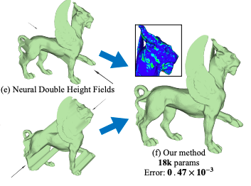

I am a fourth-year PhD student at the
University of British Columbia,
working on optimization-based methods under the supervision of
Prof. Kwang Moo Yi.
My main research interests involve using optimization-based approaches
to discover emergent phenomena from large pre-trained models.
I recently completed a three-month internship with the Qualcomm Perception team in San Diego,
where I worked under Shweta Mahajan.
Outside of academia, I was on the Canadain national team for 12 years, representing Canada
in international swimming competitions. I won multiple medals,
including a silver and bronze at the World Aquatic Championships in open water swimming.
Publications
2024

|
HyperNet Fields: Efficiently Training Hypernetworks without Ground Truth by Learning Weight Trajectories
Eric Hedlin, Munawar Hayat, Fatih Porikli, Kwang Moo Yi, Shweta Mahajan
December 2024
Abstract
To efficiently adapt large models or to train generative models of neural representations, Hypernetworks have drawn interest. While hypernetworks work well, training them is cumbersome, and often requires ground truth optimized weights for each sample. However, obtaining each of these weights is a training problem of its own-one needs to train, e.g., adaptation weights or even an entire neural field for hypernetworks to regress to. In this work, we propose a method to train hypernetworks, without the need for any per-sample ground truth. Our key idea is to learn a Hypernetwork `Field` and estimate the entire trajectory of network weight training instead of simply its converged state. In other words, we introduce an additional input to the Hypernetwork, the convergence state, which then makes it act as a neural field that models the entire convergence pathway of a task network. A critical benefit in doing so is that the gradient of the estimated weights at any convergence state must then match the gradients of the original task -- this constraint alone is sufficient to train the Hypernetwork Field. We demonstrate the effectiveness of our method through the task of personalized image generation and 3D shape reconstruction from images and point clouds, demonstrating competitive results without any per-sample ground truth.
|

|
Unsupervised Keypoints from Pretrained Diffusion Models
Eric Hedlin, Gopal Sharma, Shweta Mahajan, Xingzhe He, Hossam Isack, Abhishek Kar,
Helge Rhodin, Andrea Tagliasacchi, Kwang Moo Yi.
CVPR 2024 Highlight
Abstract
Unsupervised learning of keypoints and landmarks has seen significant progress with the help of modern neural network architectures, but performance is yet to match the supervised counterpart, making their practicability questionable. We leverage the emergent knowledge within text-to-image diffusion models, towards more robust unsupervised keypoints. Our core idea is to find text embeddings that would cause the generative model to consistently attend to compact regions in images (i.e. keypoints). To do so, we simply optimize the text embedding such that the cross-attention maps within the denoising network are localized as Gaussians with small standard deviations. We validate our performance on multiple dataset: the CelebA, CUB-200-2011, Tai-Chi-HD, DeepFashion, and Human3.6m datasets. We achieve significantly improved accuracy, sometimes even outperforming supervised ones, particularly for data that is non-aligned and less curated.
|
2023
|
|
Unsupervised Semantic Correspondence Using Stable Diffusion
Eric Hedlin, Gopal Sharma, Shweta Mahajan, Hossam Isack, Abhishek Kar, Andrea Tagliasacchi, Kwang Moo Yi.
NeurIPS 2023
Abstract
Text-to-image diffusion models are now capable of generating images that are often indistinguishable from real images. To generate such images, these models must understand the semantics of the objects they are asked to generate. In this work we show that, without any training, one can leverage this semantic knowledge within diffusion models to find semantic correspondences -- locations in multiple images that have the same semantic meaning. Specifically, given an image, we optimize the prompt embeddings of these models for maximum attention on the regions of interest. These optimized embeddings capture semantic information about the location, which can then be transferred to another image. By doing so we obtain results on par with the strongly supervised state of the art on the PF-Willow dataset and significantly outperform (20.9% relative for the SPair-71k dataset) any existing weakly or unsupervised method on PF-Willow, CUB-200 and SPair-71k datasets.
|
|

|
CN-DHF: Compact Neural Double Height-Field Representations of 3D Shapes
Eric Hedlin*, Jinfan Yang*, Nicholas Vining, Kwang Moo Yi, Alla Sheffer.
April 2023
Abstract
We introduce CN-DHF (Compact Neural Double-Height-Field), a novel hybrid neural implicit 3D shape representation that is dramatically more compact than the current state of the art. Our representation leverages Double-Height-Field (DHF) geometries, defined as closed shapes bounded by a pair of oppositely oriented height-fields that share a common axis, and leverages the following key observations: DHFs can be compactly encoded as 2D neural implicits that capture the maximal and minimal heights along the DHF axis; and typical closed 3D shapes are well represented as intersections of a very small number (three or fewer) of DHFs. We represent input geometries as CNDHFs by first computing the set of DHFs whose intersection well approximates each input shape, and then encoding these DHFs via neural fields. Our approach delivers high-quality reconstructions, and reduces the reconstruction error by a factor of 2:5 on average compared to the state-of-the-art, given the same parameter count or storage capacity. Compared to the best-performing alternative, our method produced higher accuracy models on 94% of the 400 input shape and parameter count combinations tested.
|
2022
|
|
A Simple Method to Boost Human Pose Estimation Accuracy by Correcting the Joint Regressor for the Human3.6m Dataset
Eric Hedlin, Helge Rhodin, Kwang Moo Yi
May 2022
Abstract
Many human pose estimation methods estimate Skinned Multi-Person Linear (SMPL) models and regress the human joints from these SMPL estimates. In this work, we show that the most widely used SMPL-to-joint linear layer (joint regressor) is inaccurate, which may mislead pose evaluation results. To achieve a more accurate joint regressor, we propose a method to create pseudo-ground-truth SMPL poses, which can then be used to train an improved regressor. Specifically, we optimize SMPL estimates coming from a state-of-the-art method so that its projection matches the silhouettes of humans in the scene, as well as the ground-truth 2D joint locations. While the quality of this pseudo-ground-truth is challenging to assess due to the lack of actual ground-truth SMPL, with the Human 3.6m dataset, we qualitatively show that our joint locations are more accurate and that our regressor leads to improved pose estimations results on the test set without any need for retraining. We release our code and joint regressor at this https URL
|